Results¶
Setup¶
We use a numerical phantom of size \((300 \times 300)\) pixels to represent a 2D sample with physical size \((5.6 \times 5.6)\) mm and disk-like objects to mimic photo-switching reporters. They are located around the acoustic focal plane, at depth 2.8 mm. We also consider two species A and B. They are located in the disks on top of a heterogeneous background. One disk in particular contains a mixture of A and B in 1:1 ratio, which helps us to test the performance of the algorithm on spatially overlapping targets (see Fig. 32 (a)-(c)). We let that species A has a higher dynamic range of switching signals and a faster switching speed than species B. Detailed information on the photo-physical properties and optical parameters involved in the simulation is provided in Table 6.
Name |
\(k\) |
\(\varepsilon^{\text{ON}}\) |
\(\varepsilon^{\text{OFF}}\) |
|---|---|---|---|
Species A |
4 |
\(5\times 10 ^{-3}\) |
\(1 \times 10^{-4}\) |
Species B |
2 |
\(4 \times 10^{-3}\) |
\(1 \times 10^{-4}\) |
Background |
0 |
\(5 \times 10^{-3}\) |
\(5 \times 10^{-3}\) |
We use a uniform illumination of width \(W=2.8\) mm centered on the top surface of the sample. The computed fluence map, assuming a constant absorption coefficient \(\mu_{\text{a}}=0.02\text{ mm}^{-1}\) and constant scattering coefficient \(\mu_{\text{s}}=1\text{ mm}^{-1}\), is used for reconstruction and shown in Fig. 32 (d). We compare it with the true fluence map (Fig. 32 (e)) computed using the true heterogeneous absorption coefficient map based on the background and the reporters and show the difference between them in Fig. 32 (f). We will see that despite the mismatch of up to 10% between the approximated and the true fluence distribution, our framework is robust to achieve good unmixing results.

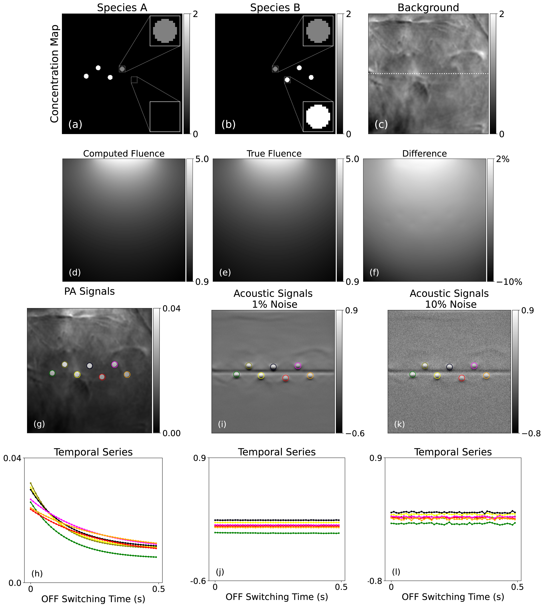
Fig. 32 (a)-(c) Ground-truth concentration maps (in \(\mu\)M) of the two photo-switching species of reporters and the non-switching background. The insets of two of the reporters are shown in (a) and (b) for better visualization. The horizontal dotted line in (c) indicates position of the focal plane of the transducer. (d) Computed fluence map (arbitrary unit) used for reconstruction. (e) True fluence map (arbitrary unit) used to synthesize measurements. (f) Difference map between (d) and (e) in percentage. (g) Synthesized PA signals (first frame) during an OFF-switching cycle. Each reporter is circled out for better identification. (h) Temporal series of PA signals (intensity averaged over the area of each reporter). The color coding is the same as in (g), similar for (j) and (l). (i) and (k): Subsequent acoustic signals (first frame) with 1% (i) and 10% (k) noise. (j) and (l): Temporal series of acoustic signals (intensity averaged over the area of each reporter) that correspond to (i) and (k).¶
To synthesize acoustic measurements, we construct and apply the true forward model on the ground-truth concentration maps shown in Fig. 32 (a)-(c) using the true fluence distribution map. Gaussian random noise proportional to a fraction of the maximal amplitude of the complete switching cycle is added to the measurements. Temporal evolution of photo-switching PA and resulting acoustic signals with 1% and 10% noise are shown in Fig. 32 (g)-(l). Animations of these signals are also available online [174]. Forward model for the reconstruction algorithm is established using the computed fluence map without prior information on the heterogeneity of the background or on the reporters.
Metrics¶
We use four metrics to evaluate the quality of reconstruction, which afford us several perspectives. Let \(\mathbf{x}, \mathbf{y} \in\mathbb{R}^N\) be the ground truth and reconstructed images, respectively.
Normalized root-mean-square error (NRMSE) which is defined as
quantifies the relative total error of the reconstruction [175] . Peak signal-to-noise ratio (PSNR) which is defined as
evaluates the strength of the signal against noise, where MAX represents the largest possible pixel value of the image. Structural similarity (SSIM) which is defined as
measures the textural similarity between reconstruction and ground truth [176]. Quantities \(\mu_{x(y)}\) and \(\sigma_{x(y)}\) are the estimated mean intensity and standard deviation of an image \(\mathbf{x}(\mathbf{y})\), \(C_1\) and \(C_2\) are constant to avoid division by a tiny number. Dice similarity (Dice) which is defined as
assesses the overlap of locations of the signal between reconstruction and ground truth [177]. Here, we choose a strict threshold of 10% in the definition of the ROI to better evaluate the separation of the signal due to the high noise setting in our simulations. Dice is between 0 and 1, and a high Dice value indicates good recovery of the location of the ROI.
Reconstruction Results¶
Low Noise Regime¶
We first show the performance of our proposed regularized one-step approach with 1% noise in the acoustic signals. In Fig. 33, we see that our method not only faithfully recovered concentration maps of the two photo-switching species compared to ground truth, but also cleanly unmixed them from each other and from the background. Our method also performs better than the regularized two-step method in the reconstruction of the two species.

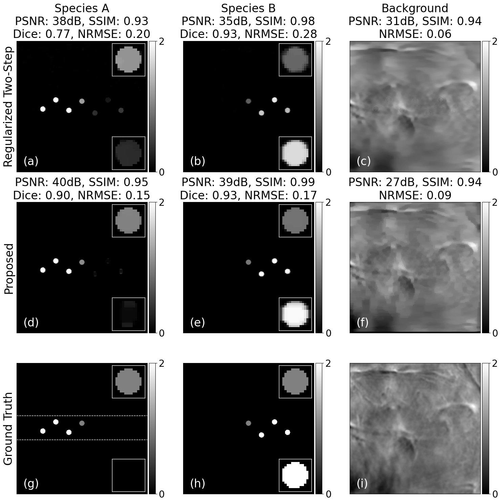
Fig. 33 Reconstruction results using the regularized one-step approach under 1% noise level. (a)-(c) Reconstructed concentration maps of the two species and the background. (d)-(e) Ground truth. Rectangular region between the two horizontal dashed lines in (d) indicates the area on which we calculate the SSIM.¶
High Noise Regime¶
We then further validate our approach by comparing it with the two-step approach at a higher level of noise of 10%. In Fig. 34, we compare four inversion techniques: unregularized two-step, unregularized one-step, regularized two-step, and regularized one-step (proposed). Unregularized techniques use the LSQR algorithm [178] to obtain the solution. We observe that only the proposed approach successfully reconstructed and unmixed the two species out of the background (Fig. 34 (p)-(t)); a close comparison of the intensity profile over a line segment (indicated in Fig. 34 (a) and (b)) with ground truth reveals quantitative quality of reconstruction. Two unregularized approaches separated the photo-switching reporters from the background but failed to distinguish the two species and mitigate noise in the reconstruction. The regularized two-step approach produced less noisy images due to the regularization but failed at unmixing the slower-switching species B from the other faster-switching species A or the background. This is indicated by the absence of reporters which belong to species B in Fig. 34 (l) and the appearance of them in image of species A and the background (Fig. 34 (k) and (m)).

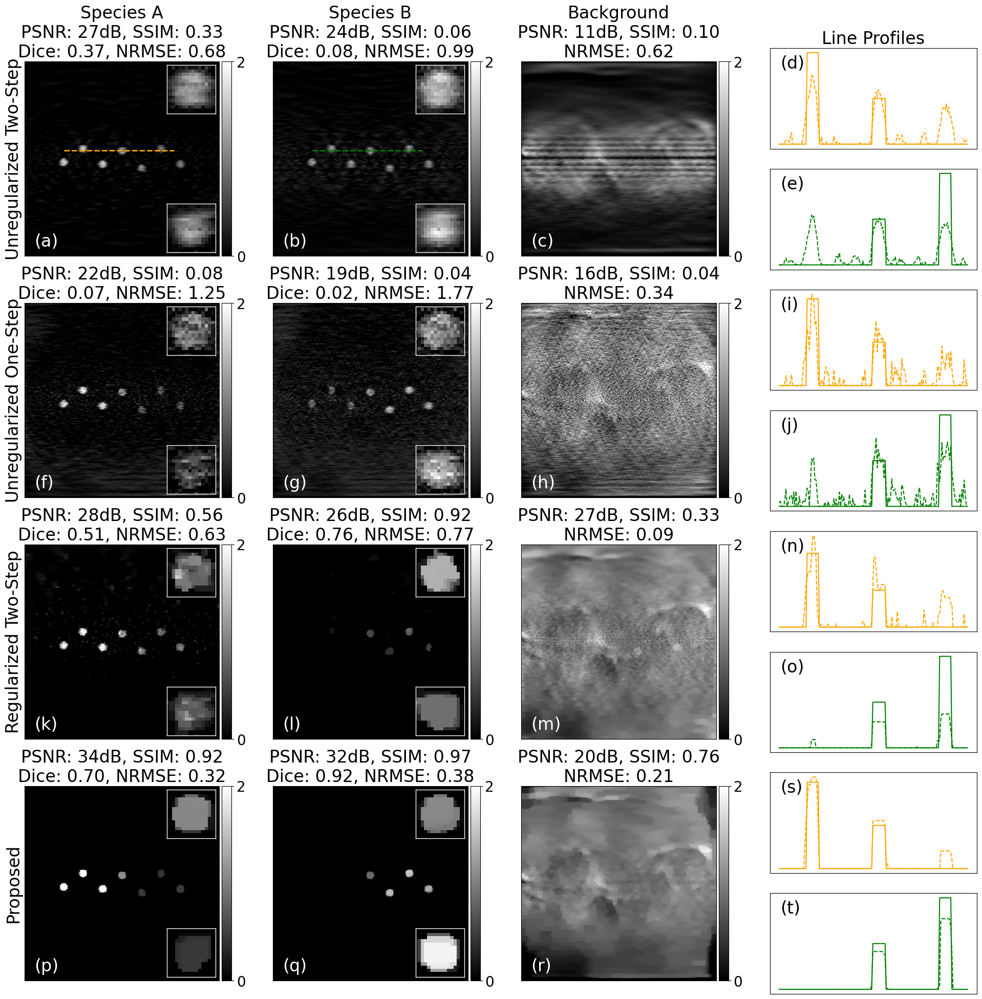
Fig. 34 Comparison of reconstruction results using different inversion approaches under 10% noise level. (a)-(e): unregularized two-step approach. (f)-(j): unregularized one-step approach. (k)-(o): Regularized two-step approach. (p)-(t): Regularized one-step approach. First to third columns: reconstructed concentration maps of the two species and background. Last column: Intensity of the reconstruction along a dashed line segment drawn in (a) and (b). Color orange and green represent line profiles in species A and B, respectively. Corresponding solid orange and green lines represent ground truth.¶
Evolution of the cost during the main minimization problem for the two regularized methods in Fig. 33 and Fig. 34 is shown in Fig. 35.
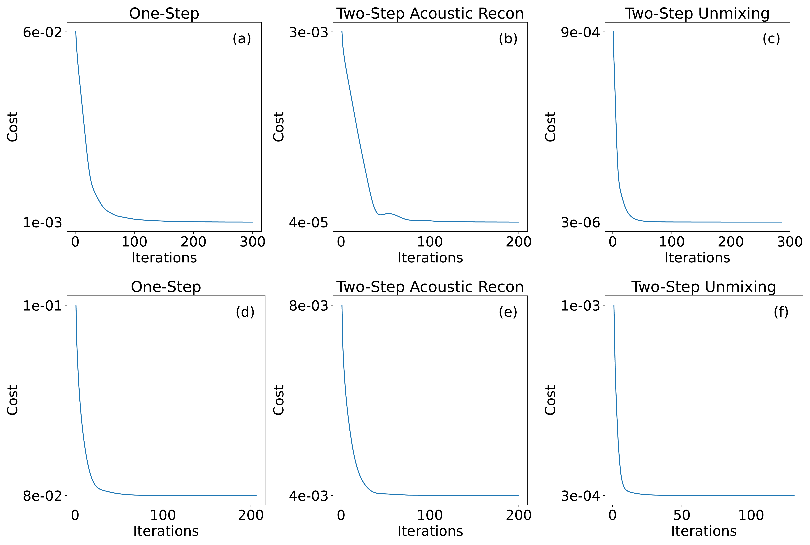
Fig. 35 Cost evolution of the regularized approaches in the case of 1% ((a)-(c)) and 10% ((d)-(f)) noise in the measurement.¶
Dependence on the Setup¶
Finally, we check the performance of our proposed approach in a variety of configurations.
Noise levels: 1%, 5%, and 10%
Kinetic constant of species A: 4.0, 3.5 and 3 (while species B is 2.0)
Laser energy: 500, 400, 300 (arbitrary unit).
We show quantitative evaluation of our approach for several configurations in Fig. 36. We see that the performance of our approach is stable across configurations. In the test of robustness against the noise level, SSIM and Dice values are close to the perfect value 1.0 (see Fig. 36 (b) and (d)). PSNR values slightly decrease (Fig. 36 (a)) and NRMSE values increase (Fig. 36 (c)) when the noise level is raised.
In a second test, we show impact of the laser power. Similar to the results in the first test, the performance of our approach is still stable, especially in terms of SSIM (Fig. 36 (f)). When laser power decreases, intensity of the light fluence is lowered, which decreases not only the amplitude of the detected signal but also the switching speed. The difficulty of unmixing therefore increases, which explains the decrease in Dice for species A in Fig. 36 (h).
We also compare the quality of unmixing when the difference between the kinetic constants of the two species changes. The evolution curve of the three metrics of the background in Fig. 36 (i)-(k) remains more or less flat, which indicates that the reconstruction of the background is not influenced. The reconstruction quality of the two species, measured by the four metrics, shows similar tendencies as compared with previous tests. Overall, the performance of our proposed approach is stable across different configurations.
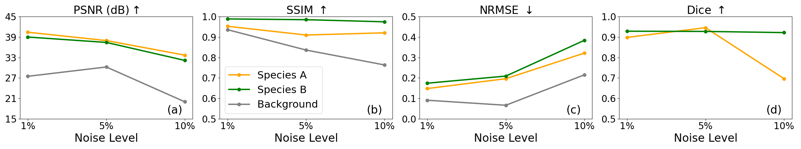
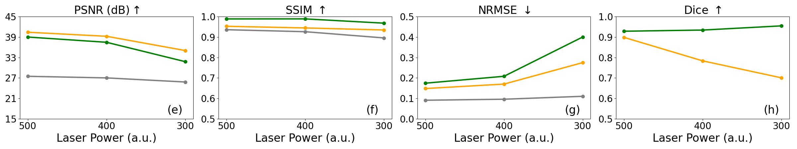
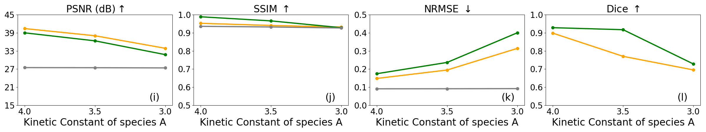
Fig. 36 Performance of the proposed regularized one-step approach under different configurations. (a)-(d) Different noise levels. (e)-(h) Different laser powers (arbitrary unit). (i)-(l) Different kinetics for species A.¶
Hyperparameters¶
Regarding the search for hyperparameters, unregularized methods only have one hyperparameter, the number of iterations. The linear systems \(\mathbf{W}_{\text{tot}}\), \(\mathbf{S}\) and \(\mathbf{A}\) are ill-conditioned. The estimated condition numbers \(\kappa\) for the setups in Low Noise Regime and High Noise Regime are \(\kappa(\mathbf{W}_{\text{tot}}) = 160\), \(\kappa(\mathbf{S}) = 280\), and \(\kappa(\mathbf{A}) = 460\). we apply early stopping to regularize the solution and avoid fitting it to noise.
The main hyperparameter of regularized methods is the regularization weight. They are tuned such that the reconstruction achieves the overall best PSNR for both species. We used \(K_2=20\) iterations for the inner loop of the proximal gradient step, threshold values of \(\varepsilon_1=10^{-8}\) and \(\varepsilon_2=10^{-4}\) for the stopping criteria, and a maximal number \(K_1=500\) of iterations for the main problem in Algorithm 3.
Computational Analysis¶
For a phantom of size \((300 \times 300)\) pixels, average computational time for regularized one-step and two-step approaches is 180 seconds and 115 seconds, respectively. The spatial integration step of the acoustic model (Eq. (75) and Eq. (77)) accounts for the majority of the computation and requires an efficient implementation. It involves repeated correlations between the input image and a sparse kernel composed of 1D semicircles of various radii that are depth-dependent (see Fig. 30).
The implementation of the spatial integration consists of two core operators:
Row Operator that generates one horizontal slice of the output signal at a given depth via a correlation with the masked spatial response followed by an extraction of a row of pixels at the focal plane;
Image Operator that assembles the output of the Row Operators at all depths to form a 2D image.
One approach to compute the correlation involved in Row Operator is to use the fast Fourier transform (FFT) and dense array representations of 2D images, hereafter referred to as the FFT Row Operator. Another approach, referred to as the custom Row Operator, computes correlations directly in the original domain.
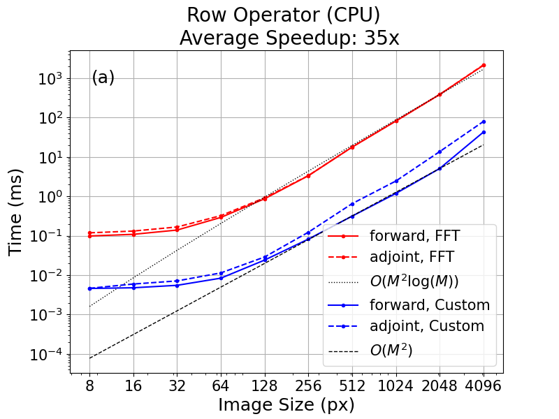
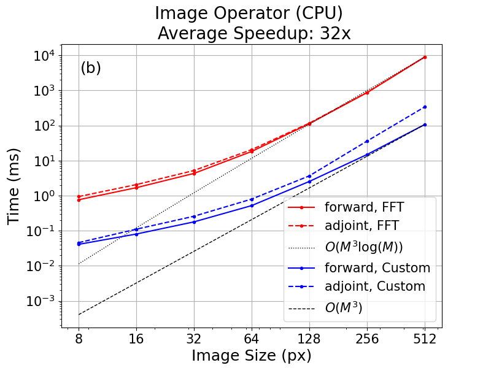
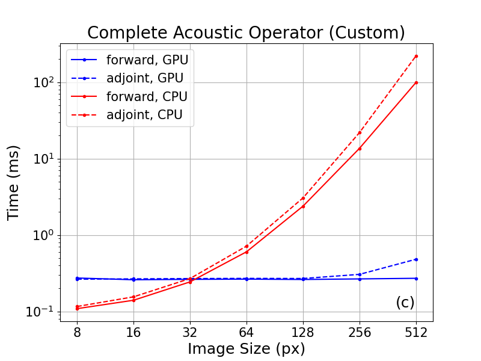
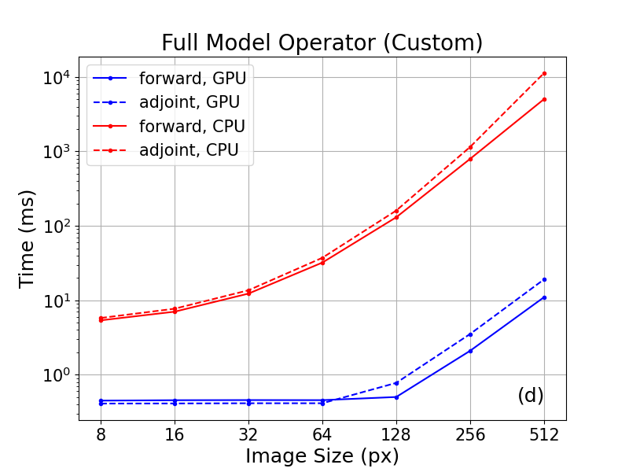
Fig. 37 Runtime benchmark of the forward and adjoint modes of the Row Operator (a), Image Operator (b), complete acoustic operator (c) and full model operator (d). Image size refers to the width of a square image in pixels. Number sampling points \(N\) in the switching temporal domain is 50 and number of species \(P\) is 3. Each data point in these plots represents the value averaged over 10 repetitions.¶
To gain insights on the performance of the FFT and custom operators, we compare the complexity the two row operators on a single row at depth \(m_2\) in the output image on CPU. We assume that the acoustic image \(q\) for one acoustic process and the kernel \(h\) are squares of size \((M \times M)\) and \((K \times K)\), respectively, and \(K\) is much smaller than \(M\). The FFT row operator uses 2D FFTs to compute correlations in the Fourier domain as
where \(M\) and \(K\) are of the same order, and conj() represents complex conjugate. Its complexity is
The custom method calculates correlations in the original domain at each pixel location \((m_1, m_2)\)
Its complexity is \(O(K^2)\) per pixel and thus, \(O(K^2 M)\) for a single row at depth \(m_2\).
Further, our sparse representation of the kernel reduces the complexity for each pixel to \(O(K)\) since the kernel is essentially a 1D curve (sparse representation) instead of a 2D image (dense representation). Consequently, we have
where \(\Lambda\) is a set of indices that approximate either the upper or lower semicircle. The final complexity is thus \(O(K M) \sim O(M^2)\) instead of \(O(K^2 M) \sim O(M^3)\). Then, we compare the complete acoustic spatial operator based on these two methods on CPU. Their theoretical complexity is \(O(M^3\log M)\) and \(O(M^3)\), due to the for loop along the depth of size \(M\). In conclusion, the theoretical complexities of the FFT Row Operator and Image operator are \(O(M^2\log M)\) and \(O(M^3\log M)\), respectively, and for the custom Row Operator, \(O(M^2)\) and \(O(M^3)\), respectively.
Although the custom approach tends to scale unfavorably in comparison with FFT, especially for kernels of large sizes, our setting permits two important simplifications that can mitigate these effects. Firstly, we only evaluate the correlated signal on the small window of the output image where it is actually needed, namely, along the row of pixels at the focal plane. Secondly, we exploit sparsity of the kernels by storing and processing only their nonzero entries. Overall, this approach achieves better asymptotic scaling and memory efficiency than the FFT one while also being trivial to parallelize over the image rows.
We use PyLops to define the forward models in the complete pipeline as matrix-free operators since explicitly assembling the matrices is prohibitive due to their sizes. We use the open-source library Numba [179] for the just-in-time compilation to accelerate the custom Row Operator. We further accelerate it on GPU using CuPy [180] and a handwritten CUDA kernel that performs all the per-row correlations simultaneously and in parallel as the Image Operator.
We benchmarked the forward and adjoint modes of the two versions of the Row Operator and the corresponding Image Operator on an Intel i9-10900X CPU and then the complete acoustic operator and the full pipeline on an NVIDIA GeForce RTX3090 GPU. The results are shown in Fig. 37.
In Fig. 37 (a) and (b), we compare the two versions of the Row Operator and the Image operator, respectively. We see that they agree well with their theoretical complexity. The custom Row and Image Operators are approximately 50 times faster than the FFT counterparts. One evaluation of either the forward or the adjoint mode of the custom Row and Image Operator of a sample of \((512\times512)\) pixels with 3 species and 50 switching points costs 0.05 ms and 100 ms, respectively, compared to 10 ms and \(10^4\) ms in the case of the FFT approach. In Fig. 37 (c) and (d), we compare the complete acoustic operator including the temporal response (c) and the complete forward model including the acoustic and the photo-switching modules (d) when using the custom Image operator. We see a significant speedup on GPU compared to CPU.
The code to produce the simulation results is available online [174].